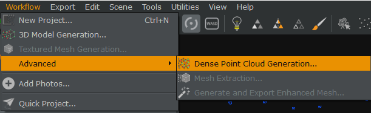

3D prentun og 3D skönnun
Markmið verkefnis 3 er að hanna og prenta módel sem hentar í 3D prentun. Hönnunin má ekki vera framleiðanleg með frádráttar framleiðslu. Einnig á að 3D skanna hlut að okkar vali.
3D prentun
Til að byrja með þarf að skilgreina kröfur verkefnisins betur. Þegar talað er um er við hluti sem unnir eru með frádráttar framleiðslu er átt við hluti sem er hægt að "draga" efni af til þess að framleiða hlutinn. Dæmi um frádráttar framleiðslu er meðal annars geislaskurður og einnig má finna verkefni unnið með þessari aðferð á síðunni undir verkefni 2. Góð leið til að uppfylla þessa kröfu er að hanna hlut sem eru holur að innan, þar sem að frádráttar aðferðin getur ekki búið til gat í hlutnum án þess að skera í gegnum hlutinn. Þar af leiðandi datt mér í hug að hanna mína útgáfu af Teketil leigumorðingjans sem ég sá á YouTube í byrjun árs.
Hönnun
Ég ákvað að teikna upp teketilinn upp í Fusion 360 þar sem ég hef ágætann grunn í Inventor. Ég byrjaði á að hanna grunninn á þversniðinu fyrir ketilinn, út frá myndbandinu. En fyrst langaði mig að athuga hvernig ég færi að því að hanna skelina fyrir yfirborð ketilsins. Mér datt í hug að búa örlítið þversnið af hlutnum, extrude-a það 1mm út, og síðan snúa því í 360 gráður. Eins og sést hér fyrir neðan gekk það mjög vel. Þessa aðferð notaði til þess að hanna þversnið.

Annað sem ég vildi athuga, var geta Fusion 360 til að leyfa mér að extruda teikningu að skáplani, þar sem ég þarf með öllum líkindum ehv að teikna innan í tepottinum. Ég byrjaði á að teikna holóttan sívaling með hornréttu plani (tangent plane) á yfirborði sívalingsins, ásamt kassa til hliðar. Á kassann teiknaði ég minni ferhyrning og extrudeaði að planinu.

Þetta virkaði nokkuð vel, en eins og sérst hér fyrir neðan þá fór extrude-ið ekki alla leið, þannig að ég lagaði offset extrude-sins örlítið (lét hann fara örlítið lengra en planið) og valdi svo join, þannig að hlutirnir myndu festast.

Einnig athugaði gerði ég mér grein fyrir að það yrði margfallt auðveldara að teikna einn helming ketilsins og spegla honum um sig sjálfan. Þetta var athugað með nokkuð einföldum hlut í Fusion.
Fyrstu drög teketilsins litu nokkurnvegin svona út
Hólfaskiptingin fyrir mismunandi vökvanna áttu sér stað lárétt fyrir miðju. Héðan þyrfti bara að búa til leiðslur fyrir útgang/inngang vökvanna ásamt höldu fyrir ketilinn. En ég var nokkuð fljótur að átta mig á því að þetta gæti verið stórt vandamál, þar sem ég væri að reyna að prenta amk. tvo lárétta fleti í lausu lofti, án stuðnings, eitthvað sem reynir mikið á brúunareiginleika prentarans (á þessum tíma átti eftir að framkvæma allar prufur til þess að skoða getu prentarans). Auðvitað væri hægt að setja inn styrkingar í millirýminu, en það væri mjög erfitt að fjarlægja þær þar sem að aðgengið er ekki nægilega gott. Þ.a.l. hófst smá rannsókn, þ.e.a.s. hvort þetta væri í raun hægt. Eftir stutta leit fann ég myndband sem að hjálpaði mér gífurlega.
Því næst hannaði ég þversnið til þess að vinna með, extrudeaði því og sneri í 180 gráður. Eftir það bjó ég til aðskilnaðarsvæði fyrir vökvana innan hlutarins
Eftir að skelin var komin fór næsta skref í gang, búa til höldu fyrir tebollan ásamt inngang og útgang fyrit vökvana. Þar sem að við höfum nú þrívíðan hlut í Fusion er ekki alveg eins einfalt að teikna bara ehv geometríu og extrudea. Við viljum á ákveðna geometríu á ákveðið yfirborð/svæði hlutarins. Þetta tókst með því að búa til Offset plan (mynd til vinstri) frá upprunalega hnitakerfi teikningarinnar, og þannig teikna inn á ákveðinn hluta ketilsins. Á myndinni til hægri má þá sjá hvernig tvívíða teikning kemur sér fyrir á hlutnum, m.t.t. Offset plansins.
Bæði halda og háls ketilsins voru teiknuð “fríhendis” og fest við hlutinn með sama máta og var sýnt hér fyrir ofan. Hálsin kom vel út að utan en ehv klikkaði að innan, eins og sérst á myndinni fyrir neðan. Ég notaði split body tool til þess að fjarlægja þennan óþarfa búta úr teikningunni.
Til þess að búa til útgöngu-/inngönguleiðir fyrir vatnið bjó ég til tvær holur að aftan með vinnuplanininu fyrir neðan (fékkst með Plane Tangient To tólinu).
Með svipuðum aðferðum of fyrir hölduna/hálsin, bjó ég til tvö vinnuplön til þess að hanna úrtennsluleiðina.

Nr. 1 er vinnuplan sem er staðsett í miðjum katlinum, nr. 2 er vinnuplanið staðsett við aðskilnaðarsvæði vökvanna og nr. 3 er teikningin (teiknuð á vinnuplan 2) fyrir útrennslisleiðina. Teikningin var extrudeuð og því speglað um miðju ketilsins. Hér fyrir neðan má sjá loka niðurstöðu hönnunarinnar. Hér má ná í STEP skrá af teketilnum.
Því næst var að átta mig á mögulegum vafaatriðum í prentinu, þ.e. hvað svæði ætti 3D prentarinn erfitt með að prenta í módelinu. Að prófa eiginleika prentara er mikilvægur liður í prent ferliu, t.d. þarf að athuga hversu langt prentarinn getur prentað á milli tveggja staða í lausu lofti með brúunar prófi (e. bridging test) og einnig á hvaða horni prentarinn getur prennt í lausu lofti (e. overhang test). Í þessu prenti voru aðal vafaatriðin overhang og brúun. Hægt er að leita sér af allskonar tilbúnum prófum til þess að skoða ákveðna eiginleika prentarans. Hér má finna eitt próf sem prentað var út. Í þessu prenti var ég aðalleg að skoða overhang-ið þegar það kemur að handelinu, skelinni og stútnum. Overhangið kom rosalega vel út eins og sést a myndinni hér fyrir neðan.
Brúnar prófið sem var innifalið í prófinu hér fyrir ofan var hinsvegar ekki nægilega langt fyrir mig. Lengsta brúunin var u.þ.b. 2.5 mm, en ég þurfti að athuga u.þ.b. 27/28 mm fyrir svæðið sem er sýnt hér fyrir neðan.
Þannig að ég bjó til lítið brúunarpróf í Fusion 360 til þess að vera alveg öruggur um að prentið myndi ekki eyðinleggjast. Ég lét prófið fara örlítið lengra í testinu til að vera handviss um að allt virki. Prentstillingar voru þær nákvæmlega sömu og fyrir teketilinn, sem verður farið yfir hér fyrir neðan.
Prófið kom virkilega vel út í prentinu eins og sést hér á myndunum. Greinilegt að prentarinn fer létt með þá lengd sem þörf er á. Hér má ná í STEP skrá af prófinu.
Prent
Nú þegar hönnunin hefur verið gerð þarf að undirbúa hana fyrir prent. Fyrst þarf að vista það sem .STL skrá og setja inn í Slicer af þínu vali. Tilgangur Slicersins er að búta niður módelið í ör þunn lárétt lög og kortleggja prentstaðsetningar módelsins fyrir prentaranum. Þar sem ég ætlaði að nota Prusa MK3S + MMU2S prentara notaðist ég við Prusa Slicerinn. Hér fyrir neðan má sjá interface Prusa Slicersins eftir að hluturinn er kominn inn í forritið. Einnig má sjá hvaða grunn stillingar ég ákvað að nota fyrir prentið.
- 0.20mm var valið því mig vantaði ekkert alltof fíngerðan hlut
- Prusament PLA var valið þar sem ég var að prenta úr PLA plasti
- Engar supports voru valdar þar sem ég taldi ekki að þess þurfti
- Infill var valið um 15% þar sem óþarfi er að vera með mikið infill í þessum hlut
- Hluturinn var einnig skalaður niður í 80% til þess að minnka óþarfa plastnotkun.
Mikilvægt er að velja rétta týpu af prentara áður en prentið er sett í gang! Ég passaði mig ekki nægilega vel á þessu við fyrsta prent. Upphaflega valdi ég Prusa MK3S í stað þess að velja Prusa MK3S + MMU2S. MMU2S er viðbót við MK3S sem gerir notanda kleift að prenta út í mismunandi litum án nokkurskonar afskipta frá notenda. Þar sem að ég ætlaði eins að prenta út í einum lit hélt ég að það væri nóg að nota aðeins MK3S stillingarnar, en svo var ekki. Hér fyrir neðan má sjá misheppnað prennt sem átti sér líklegast stað vegna þessa stillinga ásamt villumeldingunni sem kom upp á prentaraskjánum.
Næst er það smella á slice og leyfa forritnu að skipta hlutnum upp.
Einnig gerði ég ráðstafanir fyrir því að brúunin yrði erfið ef brúunarlagið væri ekki rétt sett upp. Því fór ég í prentstillingarnar til þess að skoða þetta betur.

Með því að breyta brúunarhorninu eftir mínum þörfum er hægt að koma í veg fyrir mikið vesen. Hér má sjá breytinguna á brúunarlaginu eftir því hvert brúunarhornið er. Á fyrstu myndinni er brúunarhornið 0°, á annari 45° og á þeirri síðustu 90° - sem hentar mjög vel!

Því næst þarf að vista G-Code skránna og setja inn í prentarann á SD-korti. Þegar SD-kortið er komið inn í prentarann þarf einfaldlega að fylgja eftirfarandi myndum.
Oooooog BINGÓ BJÖSSI, nokkrum tímum seinna var ég kominn með glænýjan teketil sem virkar sem teketill, en ekki sem teketill leigumorðingjans, því það lekur á milli aðskilnaðasvæðanna. Það hefur greinilega ekki verið nægilega lag fyrir aðskilnaðinn og þar af leiðandi lekur á milli.
3D skönnun
Til þess að hefja ferlið þurfti ég að finna forritið sem yrði notað. 3DF Zephyr varð fyrir valinu. Ég náði í Zephyr Free og hafðist handa. Við val á hlut til þess að skanna hafði ég í huga að best er að finna hlut sem hefur litríka/breytilega grafík á yfirborði hans. Þetta auðveldar Zephyr að búa til módelið þar forritið les punkta af myndum og tengir þá saman í möskva. Ef hluturinn er allur eins á yfirborðinu og samhverfur getur orðið hætta á lélegu módeli. Með þetta í huga valdi ég að skanna Jalapeno-Lime Loop nikótínpúða dós.
Til að geta sett Zephyr í gang þurfti ég góðan grunn af myndum. Því fleiri myndir, því fleiri punktar til þess að greina, því betra módel. Þar sem ég er að vinna með ókeypis útgáfuna af Zephyr er mér aðeins kleift að nota 50 myndir til að búa til módelið, en hægt er að kaupa leyfi af forritinu sem gefur valmöguleikann á endalausum fjölda mynda. Ég tók mínar 50 myndir umhverfis hlutinn og setti þær á fartölvuna mína í gegnum Google Drive.

Því næst var opnað Zephyr og búið til nýtt verkefni í Workflow.
Upp kemur þessi gluggi, ég breytti ekki neinu hér inni og smellti á Next.
Þaðan þarf að smella á plúsinn og velja allar 50 myndirnar sem verða notaðar.

Þaðan má smella svo á Next þar til að þessi gluggi kemur upp og smella á Run.
Eftir smá stund kemur upp þessi gluggi, þaðan má smella á Finish og upp koma punktarnir sem hafa verið greindir út frá myndunum.
Þetta lítur ekkert alltof vel út, en ferlið er langt frá því að klárast, þannig að við höldum áfram. Næst þarf að fara í Workflow, fljóta yfir Advanced og velja Dense Point Cloud Generation.
Upp koma svipaðir gluggar og komu í síðasta skrefi. Nú má smella á Next þar til að Run glugginn kemur upp aftur og smella svo á Run. Eins og sést hér fyrir neðan lítur þetta mun betur út.
Næst förum við aftur í Workflow og smellum nú á Workflow/Advanced/Mesh Extraction, aftur koma upp sömu gluggar og við endurtökum skrefin sem voru tekin hér fyrir ofan.
Nú fer allt að smella saman, héðan er aðeins eitt skref eftir. Smellum nú á Workflow/Textured Mesh Generation og endurtökum skrefin hér fyrir ofan.
Nú höfum við fullklárað 3D módel sem að kom mjög vel út! Hér má ná í afrit af 3d módelinu, skránna þarf að opna í Zephyr.